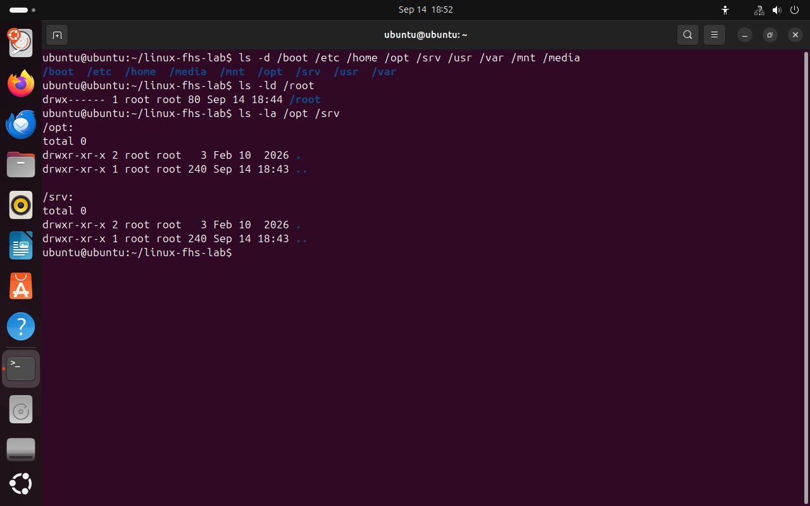
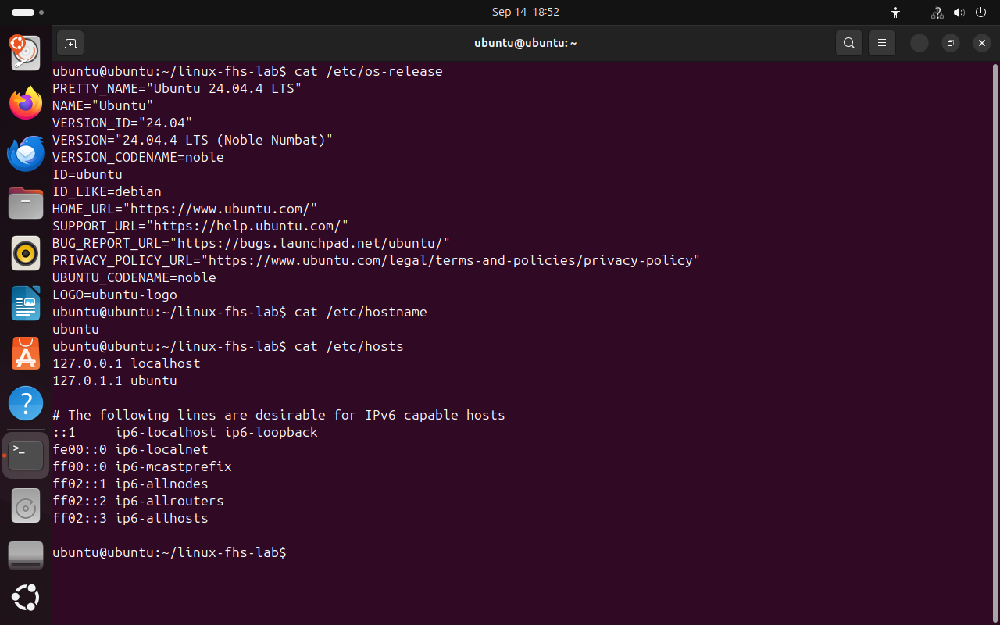
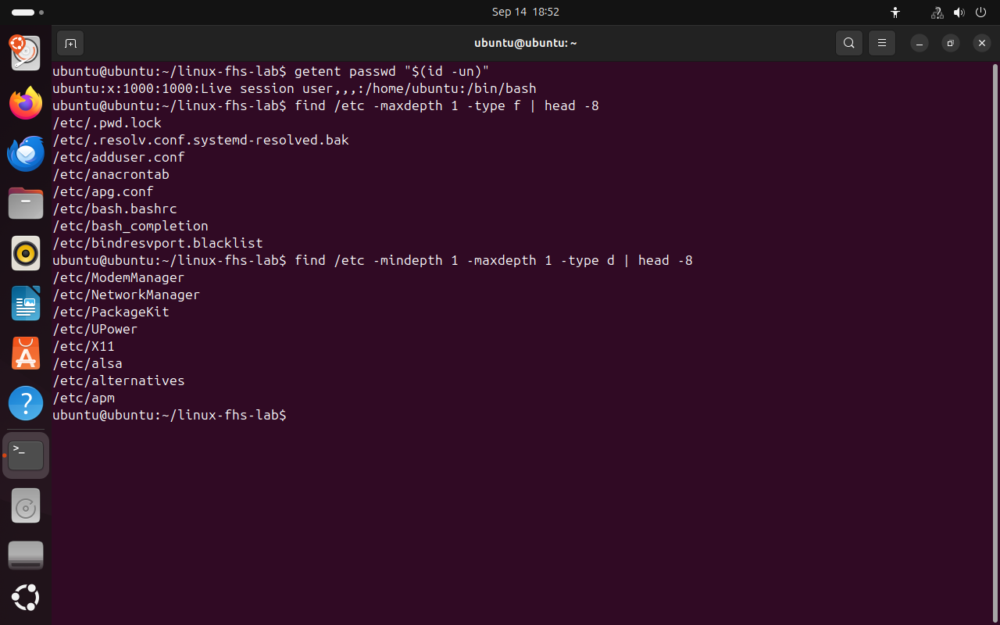

Назначение файла определяет адрес
Разберём FHS на конкретных данных: программа, конфигурация, журнал и состояние сервиса.
Файл, каталог и файловая система
Обычный файл хранит последовательность байтов. Каталог связывает имена с объектами файловой системы. Файловая система задаёт, как организуются объекты, метаданные и доступ к ним. На диске это может быть ext4; у proc данные предоставляет ядро, без обычного хранения содержимого на диске.
FHS — Filesystem Hierarchy Standard, стандарт назначения основных каталогов. Он отвечает на вопрос «где размещать данные этого вида», а ext4 — на вопрос «как их хранить». Поэтому FHS и ext4 нельзя считать двумя вариантами одного и того же.
Мы будем использовать карту ниже как рабочий справочник. Она объединяет каталоги FHS и виртуальные интерфейсы Linux. Фактическая структура зависит от дистрибутива: пустой /opt или отсутствие отдельного раздела /home сами по себе не означают ошибку.
- Где
- Терминал Ubuntu · Bash. Команды используют указанные пути; следуйте порядку главы.
- Действие
- Выполните команды по порядку и сравните наблюдение с проверкой.
ls -d /boot /etc /home /opt /srv /usr /var /mnt /media
ls -ld /root
ls -la /opt /srvНайдите /opt и /srv. Если внутри только . и .., каталоги пусты — это допустимый результат.
{kind=link}

Сначала проверяем наличие каталогов, затем их содержимое. ls -d показывает сам каталог.
Нажмите на снимок, чтобы рассмотреть команды./ · Корень дерева
Общий начальный каталог всех абсолютных путей.
pwdПосмотреть связанный кадр ↗{kind=link}
Вся карта в одной таблице
| Путь | Назначение | Проверка |
|---|---|---|
/ | Общий начальный каталог всех абсолютных путей. | pwd |
/home | Личные файлы и настройки обычных пользователей. | ls /home |
/root | Домашний каталог учётной записи root; не корень дерева. | getent passwd root |
/etc | Настройки системы и системно установленных приложений. | cat /etc/os-release |
/usr | Команды, библиотеки и общие ресурсы установленного ПО. | ls /usr |
/usr/local | ПО, которое администратор устанавливает отдельно от пакетов дистрибутива. | ls /usr/local |
/var | Состояние приложений, кэш, очереди и журналы. | ls /var |
/tmp | Не рассчитывайте на сохранность после перезагрузки или очистки. | findmnt -T /tmp |
/run | PID-файлы, сокеты и другое состояние запущенных служб. | findmnt -T /run |
/dev | Специальные файлы для обращения к устройствам и псевдоустройствам. | ls -l /dev/null |
/proc | Виртуальное представление состояния процессов и системных показателей. | head /proc/meminfo |
/sys | Представление устройств, драйверов и свойств через sysfs. | ls /sys/class/net |
/boot | Файлы, необходимые для загрузки; в установленной системе здесь могут быть ядро и initramfs. | ls -lah /boot |
/opt | Отдельные пакеты сторонних приложений; каталог может быть пуст. | ls -la /opt |
/srv | Данные, которые предоставляет сервис, например содержимое сайта. | ls -la /srv |
/mnt | Традиционное место ручного временного монтирования. | findmnt -T /mnt |
/media | Каталоги подключения съёмных носителей; автомонтирование зависит от окружения. | ls /media |
Если /home — каталог, может ли там быть подключена отдельная файловая система?
Да. Каталог может служить точкой монтирования. Путь остаётся /home, а источник хранения определяется подключённой файловой системой.
Конфигурация в /etc
Чтобы определить систему без графического интерфейса, прочитаем /etc/os-release. Поля NAME и VERSION предназначены для человека, ID удобно использовать в программах. Этот файл описывает дистрибутив, а не версию ядра.
/etc/hostname содержит настроенное имя компьютера. /etc/hosts задаёт локальные соответствия IP-адресов и имён: приложения могут использовать их при разрешении имён. Эти файлы имеют разное назначение, хотя оба относятся к настройке системы. cat выводит содержимое целиком; здесь файлы достаточно короткие.
- Где
- Терминал Ubuntu · Bash. Команды используют указанные пути; следуйте порядку главы.
- Действие
- Выполните команды по порядку и сравните наблюдение с проверкой.
cat /etc/os-release
cat /etc/hostname
cat /etc/hostsВыпишите название дистрибутива, версию, ID и имя компьютера в черновик отчёта. Найдите запись localhost. Не редактируйте файлы для этой проверки.
{kind=link}

В демонстрации — Ubuntu 24.04.4 LTS. Имя компьютера и состав hosts у вас могут отличаться.
Нажмите на снимок, чтобы рассмотреть команды.Подойдёт ли /etc/os-release для определения свободного места?
Нет. Это описание ОС. Свободное место показывает df; место хранения файла и смысл его содержимого — разные вопросы.
Учётные записи и поиск объектов
Строка учётной записи имеет формат имя:x:UID:GID:описание:дом:shell. UID — числовой идентификатор пользователя, GID — основной группы. Поле x не является паролем. Домашний каталог и командная оболочка находятся в последних двух полях.
getent passwd получает записи через настроенные источники учётных данных; они могут включать локальный /etc/passwd и сетевые службы. id -un печатает имя текущего пользователя, а $(...) подставляет результат команды. Запросим только свою запись.
Для исследования /etc используем find. Условие -type d выбирает каталоги, -type f — обычные файлы. Канал | передаёт вывод в head, который оставляет первые строки. Это выборка, а не полный список настроек.
- Где
- Терминал Ubuntu · Bash. Команды используют указанные пути; следуйте порядку главы.
- Действие
- Выполните команды по порядку и сравните наблюдение с проверкой.
getent passwd "$(id -un)"
find /etc -maxdepth 1 -type f | head -8
find /etc -mindepth 1 -maxdepth 1 -type d | head -8Найдите своё имя, UID, домашний каталог и shell. Объясните, почему во втором поиске нужен -mindepth 1: сам /etc не попадёт в результат.
{kind=link}

getent возвращает запись текущего пользователя; два поиска разделяют файлы и каталоги.
Нажмите на снимок, чтобы рассмотреть команды.Попадёт ли символическая ссылка на файл в find /etc -type f по умолчанию?
Нет. Без разыменования find рассматривает саму ссылку как объект типа l. Поэтому список обычных файлов не равен списку всего, что можно прочитать как файл.
Документация и происхождение кадров
Linux Foundation · FHS 3.0 · Canonical · usrmerge · GNU Bash · поиск команд · GNU Coreutils · Ядро Linux · proc · Ядро Linux · sysfs · Ядро Linux · tmpfs · findmnt · Microsoft · подключение тома к папке
23 кадра сняты непосредственно с дисплея VM Ubuntu-lab-01 через VirtualBox 14 сентября 2026 года. Ubuntu 24.04.4 Desktop ARM64, Live-сеанс, Bash. Команды выполнялись в настоящем терминале; оформление вывода не перерисовано. Описание среды и список кадров.